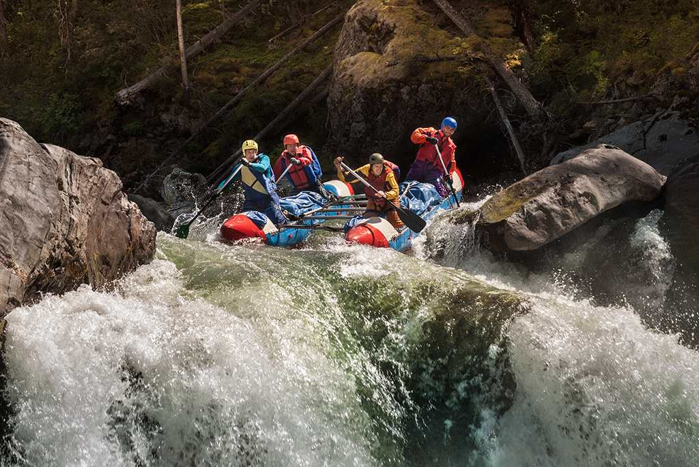
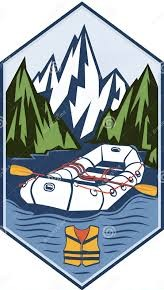
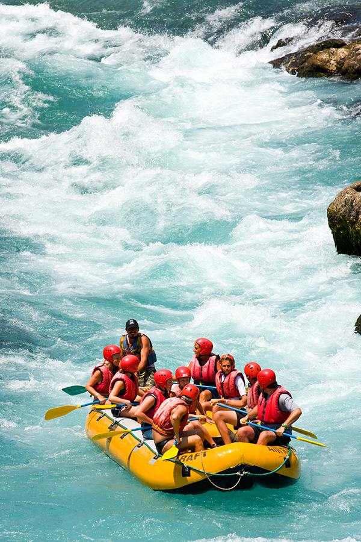

Nossa missão é proporcionar aventuras inesquecíveis em corredeiras, com segurança e emoção para todos os nossos clientes.



Nossa missão é proporcionar aventuras inesquecíveis em corredeiras, com segurança e emoção para todos os nossos clientes.
Fundada em 2005, a WWR Rafting nasceu da paixão de um grupo de aventureiros pelas corredeiras brasileiras. Ao longo dos anos, nos tornamos referência em turismo de aventura, levando milhares de pessoas a experiências únicas na natureza.